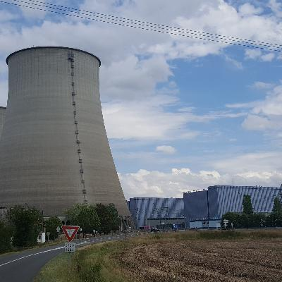
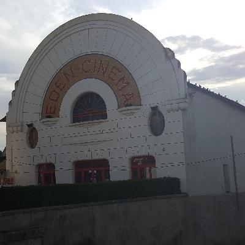
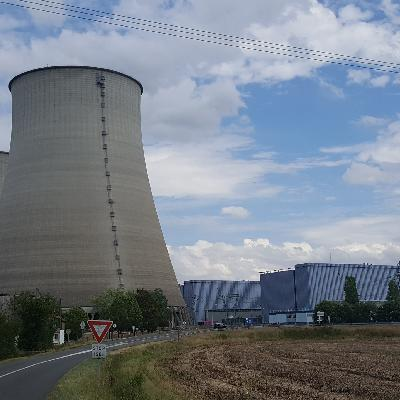
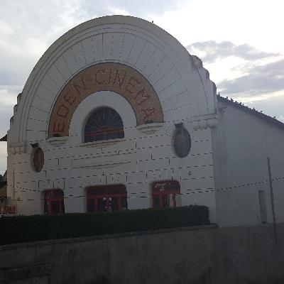

A canal bridge, and power that's clean! Safe! Too cheap to meter! Also, new brake pads for my bike. Finally, a lazy Sunday in Nevers.
Gien to Cosne-Cours-sur-Loire
The path from Gien was mostly nice and flat, and along canals. I thought the bridge that took the canal across the river was kind of cool. I also went by yet another nuclear power plant. Is this number four?

 



Cosne is kind of a nondescript town. After Orléans, it gets a lot less touristy, and I get the feeling that factory closings and such have taken a toll. I saw a sign in Cosne advertising a brand new house (I guess about 800 square feet, with a garage) for €85,000, or about a hundred grand.
In this little town, they had a memorial to the French resistance. This is a reason why, ultimately, I think France (and other West European countries) might be more resistant to Trumpism. They're constantly reminded of where it leads. This one had the names of the 11 locals who were tortured, then shot by the Germans on July 5, 1944. “The army of patriots cals you to combat. Death to the traitors! Down with fascism! Long live France!” This is in an area where there aren't many standing buildings that pre-date 1940.
Your Beast of Burden
That day, I saw a family stopped by the side of the path. They had a bike trailer with a flag on it that said “B.O.B. San Luis Obispo.” It turns out that “B.O.B.” is the dominant brand of bike trailer, to the extent that people call this kind of bike trailer un bob. But San Luis Obispo? I ran into them the next day, and they had never even noticed that the flag said that, much less that it's a city in California.
Well, I just looked it up, and “B.O.B.” originally stood for “Beast of Burden,” and it is in fact a company that got started in San Luis Obispo, in 1994. Who knew?
Cosne to Nevers
Nevers on a Sunday
It's been raining off and on this Sunday. I lucked out, and the rain came on an off day - I'm spending two days in Nevers. This makes it an ideal lazy Sunday. I don't have any Hamiltons, so I guess the Chronic les of Narnia is out, but I have plenty of other stuff to catch up on.
Gimme a Brake
It looks like I'm ready for new brake pads! There's nothing wrong, really; I've just used my breaks a lot. There are a lot of blind corners, and places you have to stop to check the signs, so I've just worn through the things. A new set can be bought for about €4 at a big supermarket, so it's no problem.
A word about the bicycle maintenance… I was thinking about it, and the problems I had weren't really because I'm carrying a ton of weight. It's more because I'm always carrying the weight. At home, I'd get groceries that were probably heaver pretty often, but I didn't carry the weight very far, and I knew the way, so I knew where to slow to a crawl to go over bumps. Carrying luggage all day every day, over bumpy roads with suprise potholes is a whole new level of bicycle wear. I do slow down for the really bumpy parts, like when the path suddenly becomes cobblestone that was laid down by the Romans (and not particularly maintained since), but inevitably there are times I bouce around pretty good.
So I guess what I'm saying is that it's not like my bicycle was all that weak or anything; it's pretty good quality, actually. It's more the case that the kind of riding I'm doing is hard on a bicycle, and for this kind of riding you just have to plan to get a special, stronger rear wheel and tire, and a good quality luggage rack. Also, I clean and oil the chain at least once a week, and it looks like a month is about how long brake pads last!